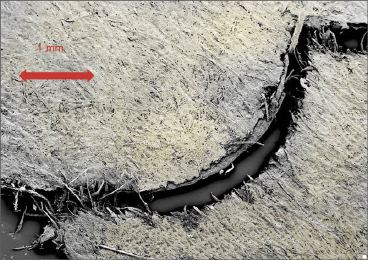
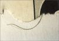
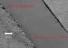
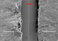

ABRISSE IN DER DRUCKMASCHINE
|
Unter Abrisse in der Druckmaschine versteht man
das Abreißen einer Papierbahn während
der laufenden Produktion (Abb. 1).
Neben Maschinenstillständen und entsprechendem
Zeitverlust führen Abrisse der Bahn in der
Druckmaschine zu erhöhter Makulatur. Bahnrisse
können im Extremfall zur Beschädigung des
Presseurs beim Tiefdruck oder Zerstörung des
Drucktuchs beim Rollenoffset führen.
|

|
Abb. 1: Abriss durch Fehlstelle im Papier
(REM-Aufnahme).
|
|
|
|
Mögliche Ursachen:
|
|

|
|
Abb. 2: Einschlüsse von
Bürstenhaaren.
|
|
|
|
|
|
Abb. 3: Leimflecken.
|
|
|
|

|
|
Abb. 4: Bahnkante mit Sägeschnitt und
Rotationsschnitt (REM-Aufnahme).
|
|
|
|

|
|
Abb. 5: Bahnkante mit Sägeschnitt und
Rotationsschnitt (REM-Aufnahme).
|
|
|
|

|
|
|
|
|
|

|
|
|
|
|
|

|
|
|
|
|
|

|
|
|
|
|
|
|
Bei zu geringer Gesamtfestigkeit des Papiers werden die in
der Rotationsmaschine nicht restlos zu vermeidenden
Spannungsschwankungen z. B. beim Rollenwechsel zum
Abreißen der Bahn führen. In der Regel ist jedoch
die Beanspruchung des Papiers in der Papiermaschine und den
anschließenden Ausrüstungsmaschinen
größer als in der Druckmaschine, sodass
ungenügende Festigkeitseigenschaften sich bereits beim
Hersteller bemerkbar machen und derartige
"Fehlanfertigungen" nicht zur Auslieferung gelangen.
Bahnspannungsschwankungen und dadurch bedingte Abrisse
können beim Einsatz von „unrunden“
Papierrollen auftreten. Ungünstig wirkt sich
längere Lagerzeit der Rollen „im Sattel“ aus,
vor allem dann, wenn durch zu viele Lagen auf die unteren
Rollen starker Druck ausgeübt wurde. Günstiger ist
immer die „Kaminstapelung“.
Unrunde Rollen und Schnittkantenbeschädigungen
können auch bei unsachgemäßem Transport
entstehen.
Aus statistischen Auswertungen von verschiedenen Druckereien
lassen sich folgende papierbedingte Ursachen auflisten
(Reihenfolge entspricht nicht der Häufigkeit):
Kantenfehler (Haarrisse, verklebte Kanten), Löcher in
Papier, Falten, schlechte Klebstellen, Wicklung,
Einschlüsse im Papier (Abb. 2), Wassersäcke und
Leimflecken (Abb. 3).
Als weitere Ursachen sind die mangelhafte Verpackung und
unsachgemäße Handhabung der Rollen zu nennen.
Hinzu kommen Rollenwechselfehler und maschinenbedingte
Fehler, deren Ursache in der Druckerei liegen.
|
Mögliche Abhilfen:
|
|
Voraussetzung für möglichst wenig Bahnrisse ist -
neben einer einwandfreien Papierqualität -
sorgfältige Lagerung und Transport der Papierrollen.
Auf eine sachgemäße Verpackung ist besonders zu
achten. Diese soll erst unmittelbar vor dem Einhängen
der Rollen entfernt werden.
Außerdem ist eine gute Regelung und Kontrolle der
Bahnspannung und der Rückbefeuchtung zu beachten.
Seitens der Papierherstellung ist darauf zu achten, dass der
Zustand der Rotationsmesser regelmäßig
geprüft wird.
|
Beispiel(e):
|
|
Aus Erfahrungen weiß man, dass unsauber geschnittene
Bahnkanten leichter zu Abrissen neigen als sauber
geschnittene Bahnkanten.
Untersuchungen m Rasterelektronenmikroskop haben gezeigt,
dass ein Beschnitt mit Rotationsmessern einen exakten
Beschnitt gewährleisten. Werden die Bahnkanten mit
einem Sägeschnitt durchtrennt, so zeigen sich starke
Einrisse im Papiergefüge an den Schnittkanten (Abb. 4
und Abb. 5).
|
Allgemeine Hinweise:
|
|
Für den Reklamationsfall:
Unbedruckte Papiermuster (ca. 20 Blatt DIN A4)
sicherstellen. An diesen Mustern können im Labor
vergleichende Untersuchungen bezüglich Bruchkraft,
Bruchdehnung, Einreißfestigkeit und
Weiterreißfestigkeit durchgeführt werden.
Rollenkanten begutachten und auf Einrisse prüfen.
Produktionsdaten protokollieren.
Reißerhäufigkeit protokollieren.
Ergänzende Literatur:
KIRMEIER, M.:
Bahnbrechend.
In: Druckwelt, (1995), Nr. 5, S. 64
GOTTLEBE, J.:
Möglichkeiten der Vermeidung von Bahnreißern.
In: Papier und Druck, 37 (1998), Nr. 10, S. 443
|
|
|
|
|
|
|
Kontakt:
wimmerm@fogra.org
|
Abr-mw-200112
|